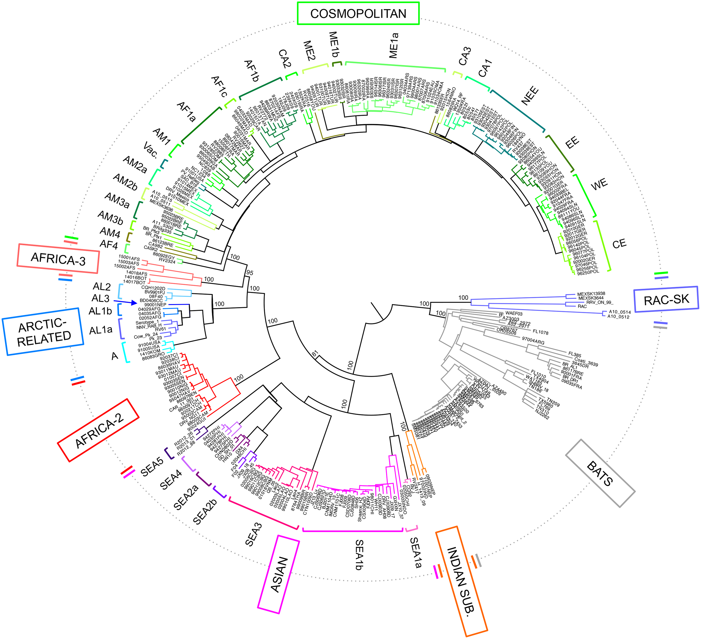
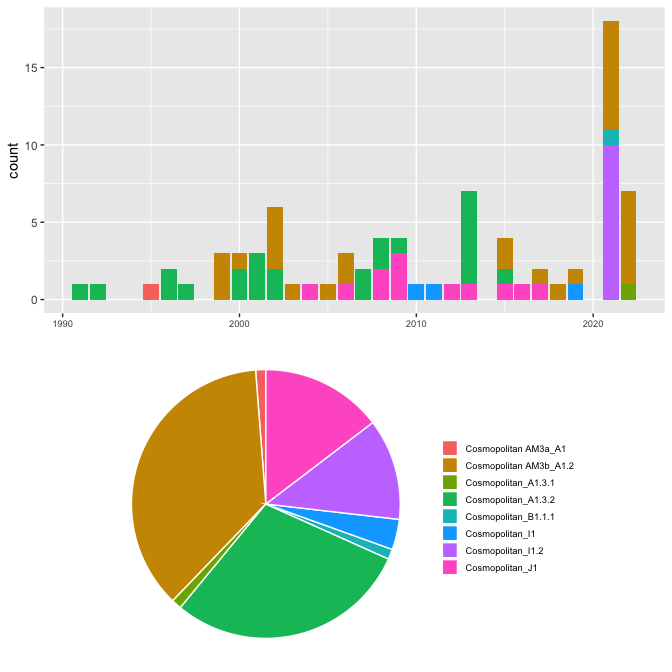

\(~\)
\(~\) \(~\)
This study contains 82 sequences from between 1991 and 2022.This sequence data came from 3 different countries.
| Country | Number of Sequences |
|---|---|
| Argentina | 48 |
| Paraguay | 2 |
| Peru | 32 |
Table 1. Numbers of sequences by area.
\(~\) \(~\)
\(~\) \(~\)
Several well-defined RABV clades circulate globally, within two major phylogenetic groups; bat-related and dog-related. The dog-related group is split into 6 different clades according to Troupin et al. (2016). These clades are: Africa 2, Africa 3, Cosmopolitan, Arctic, Asian and Indian. The majority of Nigerian sequences fall within the Africa 2 clade.
 Figure 1. Global rabies clades. Phylogeny of all global rabies clades as defined by Troupin et al. (2016). taken from https://doi.org/10.1371/journal.ppat.1006041
\(~\)
The MAD DOG (Method for Assignment, Definition and Designation Of Global lineages) tool is an updated lineage designation and assignment tool for rabies virus based on the dynamic nomenclature used for SARS-CoV-2 by Rambaut et al. (2020). This tool defines sequences beyond the clade and subclade level, allowing increased definition. Application of this tool can be used to generate detailed information to inform control efforts and monitor progress towards the elimination of rabies virus.
\(~\)
Details of the tool can be found at https://doi.org/10.5281/zenodo.5503916
\(~\)
For more information see: https://doi.org/10.1101/2021.10.13.464180
\(~\) \(~\) A total of 8 lineages have been detected in this study. 8 lineages are included here that have not been seen in this study, but are direct parents of lineages in this study, so are included for relevant evolutionary investigations.There are 13 existing lineages relevant to this study.
| lineage | country | year_first | year_last | n_seqs | parent |
|---|---|---|---|---|---|
| Cosmopolitan AM3a_A1 | Brazil | 1985 | 2005 | 1 | Cosmopolitan_A1.3.2 |
| Cosmopolitan AM3b_A1.2 | Brazil, Mexico, Argentina | 1999 | 2010 | 30 | Cosmopolitan AM3b_A1 |
| Cosmopolitan_A1 | Mexico, China, Russia, Grenada, Peru, Brazil, -, Japan, Nigeria, Gabon | 1931 | 2020 | 0 | Cosmopolitan |
| Cosmopolitan_A1.3.1 | -, China, United States, France, Ethiopia, India, Japan, Egypt, Mexico | 1939 | 2019 | 1 | Cosmopolitan_A1.3 |
| Cosmopolitan_A1.3.2 | -, Brazil, United States, Argentina, Paraguay | 1986 | 2018 | 24 | Cosmopolitan_A1.3 |
| Cosmopolitan_B1.1.1 | -, Equatorial Guinea, Gabon, Cameroon, Russia | 1986 | 2012 | 1 | Cosmopolitan_B1.1 |
| Cosmopolitan | - | - | - | 0 | RABV |
| Cosmopolitan AM3b_A1 | Brazil | 2002 | 2010 | 0 | Cosmopolitan_A1.3 |
| Cosmopolitan_A1.3 | Mexico, Israel, Egypt, -, United States, Peru | 1950 | 2017 | 0 | Cosmopolitan_A1 |
| Cosmopolitan_B1.1 | Tajikistan, Azerbaijan, Georgia, Mongolia, Russia, Kazakhstan, Iran, China, -, Poland, Ukraine, Moldova | 2001 | 2023 | 0 | Cosmopolitan_B1 |
| Cosmopolitan_B1 | Russia, China, Hungary, -, Romania | 1991 | 2017 | 0 | Cosmopolitan_A1.1.1 |
| Cosmopolitan_A1.1.1 | Serbia, -, Italy, Bosnia and Herzegovina, Germany | 1972 | 2009 | 0 | Cosmopolitan_A1.1 |
| Cosmopolitan_A1.1 | Madagascar, Montenegro, Serbia | 1978 | 2004 | 0 | Cosmopolitan_A1 |
Table 2. Details of lineages relevant to this study. First and last years refer to the first and most recent years the lineage has been detected prior to this study.
There are 3 new lineages identified in this dataset.
| lineage | country | year_first | year_last | n_seqs | parent |
|---|---|---|---|---|---|
| Cosmopolitan_J1 | Argentina | 2004 | 2017 | 12 | Cosmopolitan_A1.3.2 |
| Cosmopolitan_I1.2 | Peru | 2021 | 2021 | 10 | Cosmopolitan_I1 |
| Cosmopolitan_I1 | Peru | 2010 | 2019 | 3 | Cosmopolitan_A1.3.1 |
Table 3. Details of new lineages identified in this study. First and last years refer to the first and most recent years the lineage has been detected.
Figure 2. Sunburst plot showing hierarchal relationships of lineages. Bar length corresponds to number of sequences. Plot is interactive. Hover over bars to see details, and click to zoom in on sections.
The sequences span 31 years from 1991 to 2022. The year with the greatest number of sequences is 2021 with 18 sequences.The most prevalent lineage is Cosmopolitan AM3b_A1.2 with 30 sequences.
 \(~\)
Figure 4. Above: Number of sequences per year, with bars split by lineage. Below: Pie chart indicating proportions of lineages.
There are 1 potentially emerging or undersampled lineages within the lineages relevant to this study. This means that these lineages have between 5 and 9 sequences; not enough to be a full lineage, but are significantly diverse from their relatives. With more sequencing and more time, these are likely to become new lineages. Be aware these include ALL emerging or undersampled lineages within the relevant lineages in your dataset; not just your data. This is to show there may be gaps in the data.
| lineage | tips | distance | country | year_first | year_last |
|---|---|---|---|---|---|
| Cosmopolitan_I1.2_E1 | 5 | 0.1225448 | Peru | 2021 | 2021 |
\(~\) Table 5. Details of potentially emerging or undersampled lineages relevant to this study. First and last years refer to the first and most recent years the lineage has been detected.
There are 34 singletons of interest detected. These reflect highly divergent sequences that could indicate sequencing errors, or the start of new lineages, especially in undersampled areas. Be aware these include ALL singletons of interest within the relevant lineages in your dataset; not just your data. This is to show there may be general gaps in the data.
| lineage | n_singletons | singleton_countries | singleton_years |
|---|---|---|---|
| Cosmopolitan AF1a_A1.1.1 | 1 | Kenya | 2022 |
| Cosmopolitan AF1a_A1.2 | 1 | - | 1986 |
| Cosmopolitan AF1a_A1.2.1 | 1 | Algeria | 2002 |
| Cosmopolitan AM1_A1 | 2 | c(“Mexico”, “Puerto Rico”) | c(“2007”, “2006”) |
| Cosmopolitan AM1_A1.1 | 2 | United States | c(“1998”, “2018”) |
| Cosmopolitan AM1_A1.1.1 | 3 | c(“Canada”, “United States”) | c(“2004”, “2000”, “2017”) |
| Cosmopolitan AM1_B1 | 1 | Canada | 2000 |
| Cosmopolitan AM3b_A1 | 1 | Brazil | 2005 |
| Cosmopolitan AM3b_A1.2 | 1 | Brazil | 2005 |
| Cosmopolitan AM3b_A1.2.1 | 1 | Brazil | 2006 |
| Cosmopolitan AM4_A1 | 1 | United States | 1965 |
| Cosmopolitan CA1_A1 | 1 | Russia | 2004 |
| Cosmopolitan CA2_A1 | 1 | Iran | 2015 |
| Cosmopolitan CE_A1 | 2 | - | c(“1984”, “1996”) |
| Cosmopolitan ME1a_A1 | 1 | Iran | 2014 |
| Cosmopolitan ME2_B1 | 1 | Turkey | 2020 |
| Cosmopolitan NEE_C1 | 1 | Romania | 2013 |
| Cosmopolitan WE_A1 | 1 | - | 1998 |
| Cosmopolitan_A1.1.2 | 1 | Iran | 2000 |
| Cosmopolitan_A1.2.2 | 3 | c(“China”, “Japan”) | c(“2005”, “2001”, “2006”) |
| Cosmopolitan_A1.3.1 | 3 | c(“United States”, “India”) | c(“1954”, “2005”, “1949”) |
| Cosmopolitan_B1.1 | 2 | c(“China”, “Tajikistan”) | c(“2017”, “2012”) |
| Cosmopolitan_C1 | 1 | South Africa | 2012 |
| Cosmopolitan_G1 | 1 | Tanzania | 2011 |
\(~\) Table 6. Summary of singletons of interest relevant to this study.
| ID | closest relative | lineage | year | country |
|---|---|---|---|---|
| GU798109 | GU798108 | Cosmopolitan AF1a_A1.2.1 | 2002 | Algeria |
| U22631 | U22630 | Cosmopolitan AF1a_A1.2 | 1986 | - |
| KT336436 | KT336437 | Cosmopolitan_C1 | 2012 | South Africa |
| KR906769 | KR906768 | Cosmopolitan_G1 | 2011 | Tanzania |
| FJ228539 | FJ228543 | Cosmopolitan_A1.3.1 | 1954 | United States |
| KU963489 | KU963490 | Cosmopolitan_A1.2.2 | 2005 | China |
| KU963506 | KX708499 | Cosmopolitan_A1.2.2 | 2001 | Japan |
| DQ666322 | DQ149104 | Cosmopolitan_A1.2.2 | 2006 | China |
| DQ286762 | FJ561729 | Cosmopolitan_A1.3.1 | 2005 | India |
| LC717420 | LC717419 | Cosmopolitan_A1.3.1 | 1949 | United States |
| LC717421 | KR781605 | Cosmopolitan AM4_A1 | 1965 | United States |
| FJ228494 | FJ228495 | Cosmopolitan AM1_A1 | 2007 | Mexico |
| AB206411 | AB839169 | Cosmopolitan AM3b_A1.2 | 2005 | Brazil |
| EF152234 | DQ875051 | Cosmopolitan AM3b_A1.2.1 | 2006 | Brazil |
| DQ149104 | DQ666322 | Cosmopolitan AM3b_A1 | 2005 | Brazil |
| FJ228500 | FJ228501 | Cosmopolitan AM3b_A1.2.2 | 2005 | Peru |
| AF461045 | AF344306 | Cosmopolitan AM1_A1.1 | 1998 | United States |
| MW055128 | JQ037819 | Cosmopolitan AM1_A1.1 | 2018 | United States |
| JQ513560 | JX855994 | Cosmopolitan AM1_B1 | 2000 | Canada |
| JQ513554 | AF461045 | Cosmopolitan AM1_A1.1.1 | 2004 | Canada |
| JQ513559 | JQ513560 | Cosmopolitan AM1_A1.1.1 | 2000 | Canada |
| MW055127 | MW055128 | Cosmopolitan AM1_A1.1.1 | 2017 | United States |
| KU963502 | KU963506 | Cosmopolitan AM1_A1 | 2006 | Puerto Rico |
| MN642580 | AY352497 | Cosmopolitan_B1.1 | 2017 | China |
| AY352461 | AY352456 | Cosmopolitan CA1_A1 | 2004 | Russia |
| KY765901 | KX708501 | Cosmopolitan_B1.1 | 2012 | Tajikistan |
| U42605 | JF973781 | Cosmopolitan CE_A1 | 1984 | - |
| AF033905 | OM542205 | Cosmopolitan CE_A1 | 1996 | - |
| AF045664 | AY854593 | Cosmopolitan WE_A1 | 1998 | - |
| OL449090 | OL449091 | Cosmopolitan NEE_C1 | 2013 | Romania |
| AY854580 | U42704 | Cosmopolitan_A1.1.2 | 2000 | Iran |
| MK760763 | MK760764 | Cosmopolitan ME1a_A1 | 2014 | Iran |
| MZ391102 | OM971003 | Cosmopolitan ME2_B1 | 2020 | Turkey |
| MK760766 | MT079888 | Cosmopolitan CA2_A1 | 2015 | Iran |
| OR270981 | OR271019 | Cosmopolitan AF1a_A1.1.1 | 2022 | Kenya |
\(~\) Table 7. Details of individual singletons of interest relevant to this study.